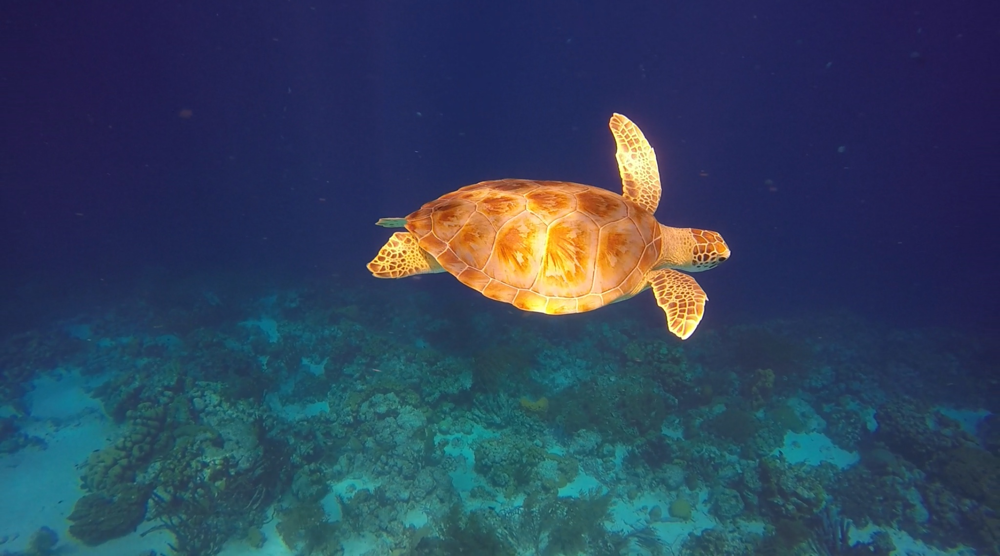
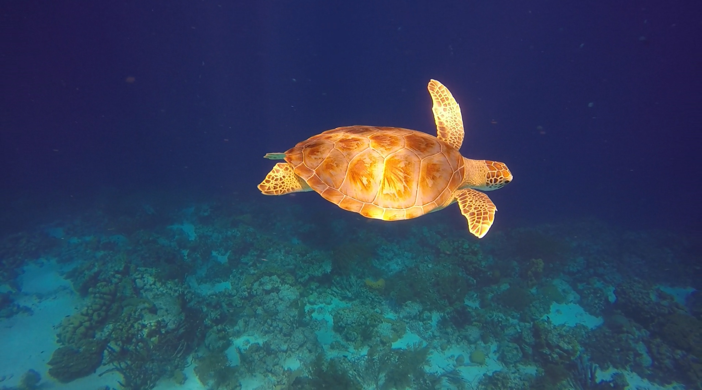

Mijn ervaring
 

Zelf ben ik ook op Bonaire geweest en heb hier gesnorkeld en leren duiken. Ik vind dit nog steeds erg leuk om te doen.
Snorkelen
Ik snorkel al sinds dat ik klein was. Ik ben 4 keer op Bonaire geweest. Alle keren gingen we snorkelen met een boot die de Woodwind heet, zie Woodwind. Met deze boot vaar je naar Klein Bonaire. Hier is veel koraal nog intact en er leven onder andere schildpadden, inktvissen en murenen. Ook gaat er altijd een fotograaf mee met een hele goede onderwaterfcamera hij heeft deze foto van mij gemaakt. Zelf maak ik ook foto's met een gopro, bijvoorbeeld deze foto van een schildpad.
Duiken
In juli 2017 heb ik leren duiken op bonaire. Ik deed de cursus om openwater diver te worden. Na deze cursus mag je tot 18 meter diep duiken. Tijdens deze cursus leerde ik veel vaardigheden, moest ik veel proef duiken maken en ook veel studeren. Ik vond het super leuk om te doen. In de zomervakantie in 2019 ben ik weer terug gegaan naar Bonaire en toen ben ik weer gaan duiken. Toen moest ik eerst een ophaal cursus doen om weer te mogen duiken. Dit had ik gedaan en daarna ging ik duiken vanaf een boot bij Klein Bonaire. H ier heb ik veel schildpadden gezien en het was super mooi.
Leuke plekken om te bezoeken
| Leuke Plek | Adres | Wat is er te doen? / Wat is er te zien? |
|---|---|---|
| Flamingo Adventure Golf | Kaminda Lac, Kralendijk | Een super leuke en gezellige minigolfbaan(ga wel in de avond, want overdag is het heel warm) |
| Karels Beach Bar | Kaya J.N.E. Craane, Kralendijk | Een lekker restaurant op een soort steiger met mooi uitzicht op zee en het is vooral mooi bij zonsondergang |
| Washington Slagbaai National Park | Washington Slagbaai National Park | Dit is een heel groot natuurpark waar je veel dieren tergen komt |
Klik op deze afbeeldingen om meer te weten te komen over deze locaties